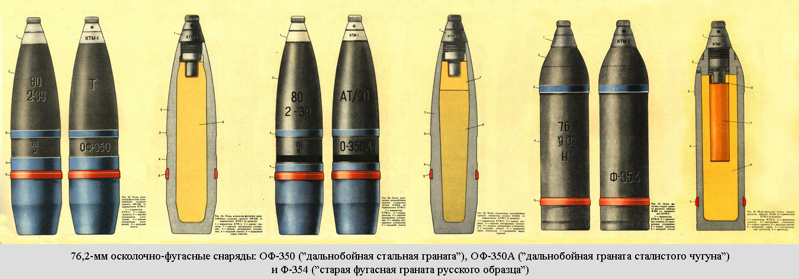

В мире существует множество танковых снарядов
сегодня мы рассмотрим некоторые из них
№1: Осколочно-фугасный
Осколочно-фугасный или просто фугасный снаряд не отличается хорошим пробитием но при пробитии наносит большой урон. Фугас "до краёв"наполнен взрывчаткой, и при контакте с бронёй тротил детонирует и снаряд разлетается на осколки.
№2: Подкалиберный бронебойный
Подкалиберным этот снаряд называется потому что эго калибр меньше калибра орудия. Пробивает броню не сам снаряд, а сердечник который находится внутри поддона. При столкновении с бронёй поддон разрушается и сердечник влетает в броню. Покалиберный бронебойный снаряд имеет очень большое пробитие, но в отличии от фугаса урон экипажу наносит лишь сердечник и куски отколовшейся брони.
№3: Кумулятивный
Кумулятивный снаряд наносит урон танку и его экипажу кумулятивной струёй. Внутри снаряда находится взрывчатка и металл (в основном медь). При поподании в броню тротил детонирует и медь нагревается и летит в форме струи с температурой в 600 градусов по Цельсию и со скоростю в 5 км/с. Сзади скорость струи 1 км/с. таким образом струя растягивается. К примеру: первая космическая скорость 8 км/с. Хотя струя и горячая она не может мгновенно плавить сталь, но при этом хоть броня и твёрдая кумулятивная струя и стальная броня ведут себя как две идеальные жидкости. Струя буквально проходит сквозь броню и наносит большой урон танку.
№4: ПТУР
ПТУР (противотанковая управляемая ракета) - единственный снаряд которым можно управлять. ПТУР является управляемым кумулятивом на реактивной тяге. Если хотите узнать про ПТУР больше читайте статю №3. ПТУР имеет отличное пробитие - до 700 мм